A generator of hypnotic Berlin techno
Version 1.0.0 · 671 parameters · manual built 01.10.2026
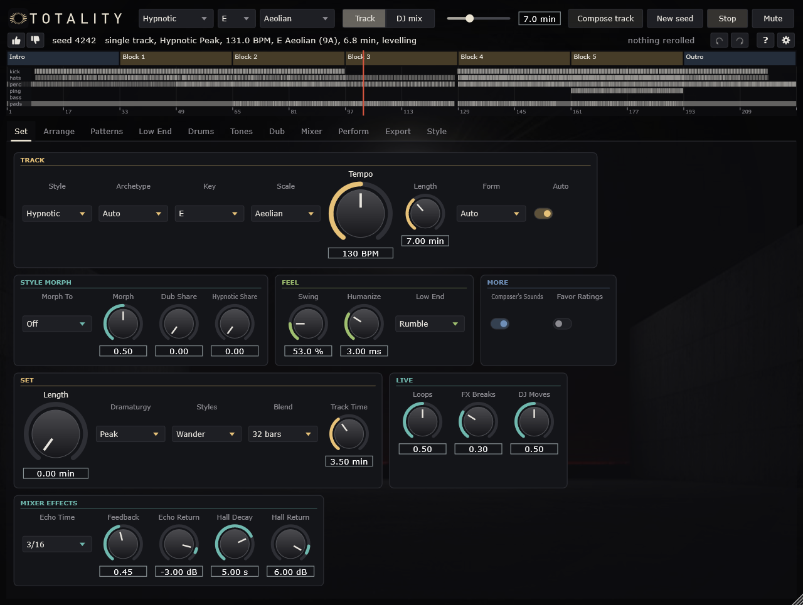
Totality composes, mixes and plays hypnotic Berlin techno: tracks of six to eight minutes and DJ sets of up to four hours, in which the tracks follow one another on two decks as a DJ would mix them. Nothing is played back from a recording. The kick, the rumble under it, the twelve lanes of the drum kit, the ping, the bass and the 303, the dub chord, the drone and the texture are synthesised; the tape echo, the spring, the plate and the rooms are simulated; and every note, every operation of the form and every move of a knob is decided by the composer.
The music it aims at is the one of Berghain and Ostgut Ton, of Dub Techno and of the hypnotic school: a groove that holds for minutes and changes by one element at a time, a low end made of a kick and the rumble of its own reverb, a chord thrown into a tape echo. Four style profiles span it -- Hypnotic in the centre, Ostgut, Dub and Raw -- and every knob of their recipes was fitted against measurements of thirty reference tracks: their spectral balance, their width, their loudness and its range, and how alike their bars are.
The same seed always gives the same track. A track is a seed, a style, a length and a handful of rerolls, which is what a set file stores and what you can hand to someone else. The standalone and the plugin play what the offline renderer plays, sample for sample.
Totality is the moment of a total eclipse when the moon covers the sun entirely and only the corona shines round the dark disc. In Totality's Patterns view the kick is that disc: every other part turns around it in rings, and its corona swells with every beat.
The standalone plays by itself: press Play. Track and DJ mix, beside the style, choose what Totality makes: a single track, or a DJ mix -- a set of tracks mixed on two decks. A click on either composes it at once; the length beside them is the one of what is chosen (a track 2 to 16 minutes, a mix 10 minutes to 12 hours), and the Compose button names what it writes (Compose track, Compose mix) with the knobs as they stand; New seed draws a fresh one. The status line begins with "single track" or "DJ mix of" and tells what plays: its style and form, its tempo, its key with the Camelot label a DJ mixes by, and its length. While a track begins to play, Totality measures its loudest part in the background, sets every part against the kick -- each lane of the kit, the figure and the other tonal voices, one or two up front and the rest behind them, the room taken back where the mids would stand over the records' -- and brings the track to its style's loudness; the status says "levelling" until the corrections have glided in.
A DJ mix of that many minutes is a set: a dramaturgy of tempo and energy, tracks in neighbouring keys, blends of 16 or 32 bars with the bass swapped on the 32-bar line where the incoming track's figure lands -- its first body block runs under the outgoing track's full groove --, loops of the last track under the next on the third deck, breaks from the mixer's effects.
In a DAW, Totality is an instrument plugin that follows the host's transport: it plays when the host plays, jumps when the host jumps, and plays at the host's tempo (a set's own tempo drift is the standalone's and the export's). Its output is a finished stereo mix at about -10 LUFS with its true peak under -1 dBTP.
A reroll draws one part of the track again and leaves the rest as it was: form, harmony, rack, layers, blocks, events, moves, sounds. In a mix the rerolls act on the track under the playhead, and "reroll the whole track" or "the mix's plan" draw more at once (the Arrange page).
Totality shares its panel with the other generators of the family -- Phosphene, Ephemeris and Parhelion (and, in part, Noctuary) -- so that what is learned on one holds on the others: the same places, the same keys, the same controllers, the same hands. Each keeps its own colours, its own letters and the picture behind its panel (Settings > Picture behind the panel takes it away).
The header's first row: the logo, the style, the key and the scale, what is composed and its length, Compose, New seed, Play and Mute. Its second row: the thumbs -- a verdict on what plays, for the curation --, the status line, and at the right Undo, Redo, Help and the settings. Under the header the whole track or set at a glance; a click jumps there. The tabs come in one order everywhere: Set, Arrange, the instrument's own pages -- a page of several has small tabs of its own --, Mixer, Perform, Export, Style.
A page taller than the window shows its groups in sections, one at a time, with a switch at its top right: a synth's sound and its modulation apart (Sound, Modulation), and where even those do not fit, cut further, each named after its first group (Filter, LFO, Matrix ...). At the window's usual size, 1280 by 860, no page scrolls. The overview above the tabs can be folded away in the settings; the pages then get its height.
A colour says what a control does, the same on every page and in every generator of the family: the sources, the filters, the envelopes, what moves by itself, the room and the mix. A knob the composer moves has a thin ring round it that shows where it stands at this moment. A double click sets a control to its default; a right click offers MIDI learn, forgetting the controller, and the default.
Undo and Redo take back and bring back what was changed -- a knob, a new seed, a reroll, a preset, a loaded set -- one step at a time; the button's tooltip names the step. Help opens this manual by topic, with the page in front, the keys and the headset as topics of their own. The settings hold the update check (it asks GitHub once a day whether a newer Totality is out; nothing else is sent), the picture behind the panel, the overview, the headset, the window's size, full screen, the keys and About.
Space play / stop Ctrl+Z undo Ctrl+Y, Ctrl+Shift+Z redo F1 help F11 full screen (the standalone); Esc leaves it and closes the help Ctrl+S, Ctrl+O save the set, open one Ctrl+E export
The controllers every generator of the family listens to without learning: controller 74 (brightness) moves the master filter, 11 (the expression pedal) the echo throw; the mod wheel is left free. The keys from middle C up toggle the mutes (Perform).
The headset. The controls of a Meta Quest's hands are shown only while a headset sends them -- or always, if the settings say so (Headset > Always show them); Off stops listening. The Quest app sends its hands to this computer in bridge mode: bridge_host = this computer's address in its tot.cfg (audio=0 leaves the headset silent), and Totality listens on port 9103. The hands mean the same in every generator of the family, on the headset alone and here:
left pinch play / stop both hands pinched the next track (or set) right pinch kick out / kick in left hand up, down the master filter: low pass below the middle, high pass above right hand up the echo throw
A pinch acts when it opens again, so a pinch of both hands is never also one of each; a hand moves its control only while it does not pinch, and both glide and are centred: a hand at mid height plays what was composed.
A track has one of three forms. The Arc is the DJ tool: an intro of 32 or 64 bars -- never the kick alone: kick, hats and a percussion from the first bar, or hats and percussion, or an atmosphere and percussion, with the kick on bar 9 or 17, as most of the reference records begin (the plan names the opening); the percussion that opens it carries it, four to seven hits a bar and up front in the balance, and a mix's first track never begins with the kick --, a body that builds its groove over its first blocks -- a main entry on each block's first bar and further hats and percussion on its 8-bar lines, full by about bar 97 --, an outro that takes them away again -- so it mixes. The Peak builds to a kick-out and returns into its densest block. The Endless is full from the first bar and changes only by exchanging layers, as the hypnotic records do. Every block has exactly one operation (add, remove, swap) on its first bar -- a hat or a perc may come in on the block's 8- or 16-bar line instead --, every change falls on a 4-bar line and a return on a 16-bar line; nothing tonal plays in the first and last 32 bars, so two tracks can be mixed without a clash.
Every track is of a kind as well as of a style, its archetype: a Tool (the groove and its automation), a Roller (toms, shaker and rim in polymeters, the percussion up front), a Stab, an Acid or a Bleep track (the chord's stabs, a 303 line or the ping as its figure), a Dub Chord track (the chord with its echo chain) or a Tribal track (toms, claps and rims, fills, a kick-out). Each style draws them with its own weights -- Hypnotic mostly Rollers and Bleeps, Ostgut Stabs and Tools, Dub its Dub Chords, Raw Acid and Tribal tracks --; Archetype fixes one, and a set never plays two of a kind in a row. The archetypes with a melodic figure play it the same one or two bars from its entry (the body's second block; a bass riff with the body) to the end, and it changes only through its filters. Between the operations the body runs in waves of 32 or 64 bars: the figure's filters and the hats' bus open towards a wave's end and fall back after it; two to four bars before that landing something drops away -- the centre of the mix, the kick and the claps, the figure -- so that the landing lands; in the middle of a wave one element (the figure, the bass or the rumble, the percussion, the open hats and the ride) breathes out for 8 or 16 bars and comes back with an echo throw. The Arrange page names the figure and the bars where the waves land.
Style picks the profile; Morph To and Morph blend it with a second one; the Dub and Hypnotic shares pull any profile along the two axes the style is described by. With Auto the tempo, the key and the owner of the low end are drawn from the profile; without it the knobs decide. Minutes is the track's length, rounded to whole blocks.
A set is mixed the way the Berghain residents describe their nights: as one long recomposition, not a row of crossfades. Each track is heard for about three minutes of its own (Track Time) and a third of it lies under its neighbours -- about twenty tracks an hour. The incoming track comes in with its first body block, its highs first and its mids over the last 16 bars, its low band killed; on a 32-bar line the bass goes over in one move; the outgoing track keeps its hats a while, loses its mids and highs and fades. The third deck borrows: the hats and percussion of the track that just left carry on under the new one, the next track's figure is teased in, high-passed, before its blend (where the keys agree), or a percussion loop of the track before last is layered under the one playing. Between the blends the DJ's hand works the channel on the 16-bar lines -- a low kill before the line so the kick slams back, the highs taken out and faded back in, a dip of the mids, the high-pass filter drawn up into the line, an echo throw on the last beat -- never where the track itself already drops something.
The set knobs: its length (up to twelve hours), the dramaturgy (Warm-up, Peak, Closing, Sunday, Flat, Cruise -- hard from the start, a long cruise, building again at the end -- and Marathon -- a warm-up, two peaks, a long closing: the arc of tempo and energy over its length), whether the styles wander with the energy or stay, how often the third deck borrows (Live Loops), how often a break comes from the mixer's effects, the blend's length, a track's own time (Track Time) and how busy the DJ's hand is (DJ Hand). The mixer's effects are one send per deck into a tape echo and a long hall, which the set's breaks throw into and the Perform page's throw uses.
| Control | Key | Range | Default |
|---|---|---|---|
| Tempo | compose.bpm | 100 .. 160 BPM | 130 BPM |
| Key | compose.key | C, C#, D, D#, E, F, F#, G, G#, A, A#, B | A |
| Scale | compose.scale | Aeolian, Dorian, Phrygian, Hexachord, Minor Pentatonic | Aeolian |
| Style | compose.style | Hypnotic, Ostgut, Dub, Raw Peak | Hypnotic |
| Length | compose.minutes | 2 .. 16 min | 7 min |
| Swing | compose.swing | 50 .. 66 % | 53 % |
| Humanize | compose.humanize | 0 .. 10 ms | 3 ms |
| Low End | compose.low_owner | Rumble, Sub | Rumble |
| Auto | compose.auto | off / on | on |
| Form | compose.form | Auto, Arc, Peak, Endless | Auto |
| Morph To | compose.morph_to | Off, Hypnotic, Ostgut, Dub, Raw Peak | Off |
| Morph | compose.morph | 0 .. 1 | 0.5 |
| Dub Share | compose.dub_share | 0 .. 1 | 0 |
| Hypnotic Share | compose.hypnotic_share | 0 .. 1 | 0 |
| Composer's Sounds | compose.pick_sounds | off / on | on |
| Archetype | compose.archetype | Auto, Tool, Roller, Stab, Acid, Bleep, Dub Chord, Tribal | Auto |
| Favor Ratings | compose.use_ratings | off / on | off |
| Control | Key | Range | Default |
|---|---|---|---|
| Dramaturgy | set.dramaturgy | Warm-up, Peak, Closing, Sunday, Flat, Cruise, Marathon | Peak |
| Styles | set.journey | Stay, Wander | Wander |
| Live Loops | set.loops | 0 .. 1 | 0.5 |
| FX Breaks | set.fx_breaks | 0 .. 1 | 0.3 |
| Blend | set.blend | 16 bars, 32 bars | 32 bars |
| Set Length | set.minutes | 0 .. 720 min | 0 min |
| Track Time | set.track_minutes | 2 .. 6 min | 3.5 min |
| DJ Moves | set.dj_hand | 0 .. 1 | 0.5 |
| Control | Key | Range | Default |
|---|---|---|---|
| Echo Time | djfx.echo_time | 1/16, 1/8, 3/16, 1/4, 3/8, 1/2 | 3/16 |
| Feedback | djfx.feedback | 0 .. 1 | 0.45 |
| Echo Return | djfx.echo_return | -60 .. 6 dB | -3 dB |
| Hall Decay | djfx.hall_decay | 0.5 .. 12 s | 5 s |
| Hall Return | djfx.hall_return | -60 .. 12 dB | 6 dB |
Every synth has 1024 factory presets: the kick, the rumble, the sub, a lane of the kit, the ping, the bass, the 303, the dub chord, the drone and the texture. Each engine has sixteen groups -- "Berlin 909", "Dub Sine", "Ride Bell", "Classic 303", "Basic Channel" -- and each group sixty-four presets on an eight by eight grid: the rows an adjective from dark to bright ("Muffled" ... "Cutting"), the columns a noun of the group's own, so the name tells where on the grid a sound lies. A preset is the sound, not the mix: levels, pans, sends, ducking, the octaves and a lane's role and pattern stay where the mix and the composer put them.
For every track the composer chooses a preset per synth and per lane of the kit (Composer's Sounds, compose.pick_sounds): a group by how well it suits the track's style, a lane only among the presets made for its role, and in the group a row that leans to the middle -- the darkest and the brightest are chosen less often. The style then holds a few knobs in its own range (the Dub kick's soft click, the Raw kick's hard clip, the Dub chord's bright band). Reroll sounds draws other presets and leaves the notes as they are.
The knobs show what plays. When a track begins -- in a set, when the next track starts on its deck -- its presets and its style's mix are put on the knobs, and each page names the preset the composer chose ("this track: Punchy Drum Hall (Hypnotic Thud)"); the Arrange page lists them for the whole track. Turn a knob and the sound follows from there; choose another preset from the menu, or step through them, and it plays at once. In a blend each deck keeps its own track's sound: the knobs show the incoming track while the outgoing one plays on as it was.
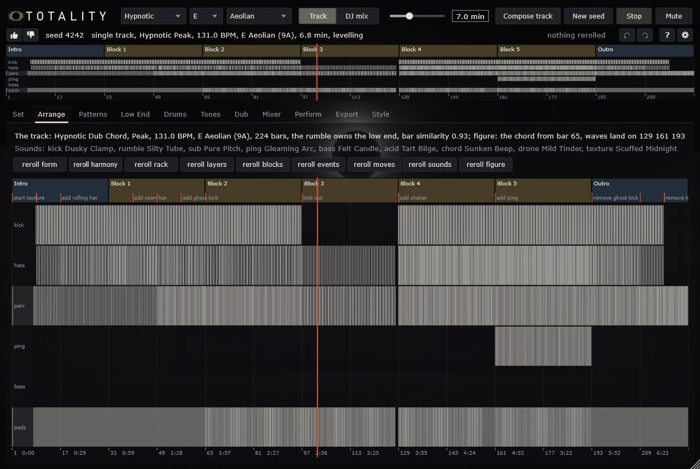
The arrangement across the whole length: in a mix the tracks on decks A and B (their swaps marked: from there a track owns the low end), in a track its blocks with their names, and under them a lane per group of layers -- kick, hats, perc, ping, bass, pads -- lit where it plays, and a ruler: a track's bars (on the Arrange page with the time beside them), a mix's minutes. The Arrange page shows the operations of the form by name. A click jumps there.
The mouse wheel zooms in and out around the pointer, down to four bars, where every hit of the kit stands apart; a drag, the wheel with Shift or a sideways wheel moves along, a double click shows the whole length again. A zoomed view pages on with the playhead when it runs out of it (not when you moved the view away), and the strip on top marks the window of the Arrange page.
The row of rerolls acts on the track under the playhead; each part of it is drawn from a stream of its own, so a reroll of the blocks keeps the harmony and the sounds, a reroll of the moves (the automation) keeps every note, and a reroll of the figure draws another motif for the same voice.
The + and - beside the status line rate the track under the playhead. The ratings are kept in Documents/Totality/ratings.tsv with the track's archetype and the groups of its presets; with Favor Ratings (the Set page) the composer draws the archetypes and preset groups you liked more often and the ones you did not seldom -- none is ever ruled out. A saved set does not carry the ratings: it plays back the same only with Favor Ratings off.
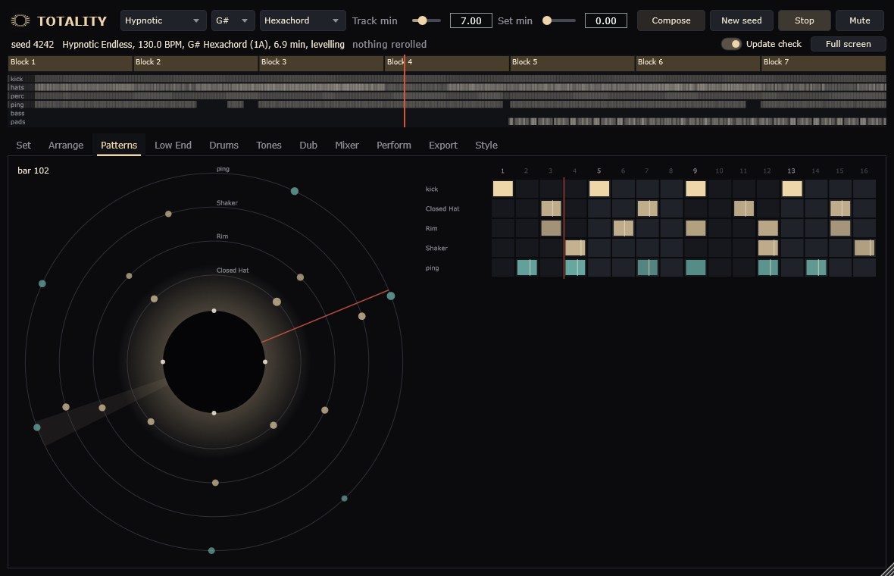
The kick is the dark disc in the middle, and every other part that plays in the bar is a ring around it: a bar once round, its onsets as beads, larger the louder, the playhead's hand sweeping over them. A layer on the sixteen-step matrix shows the same beads bar after bar; a polymeter or a slipping layer moves on from bar to bar -- it precesses, and you can see it. Where three rings or more have an onset on the same sixteenth, the corona lights up at that angle: a conjunction. Beside it the same bar as a step grid, with a tick where an onset lies off the grid (swing and feel).
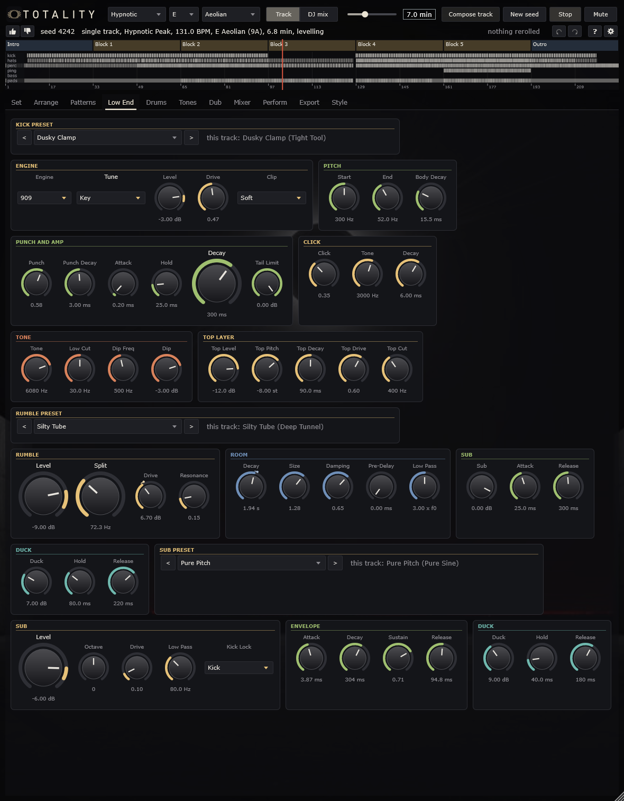
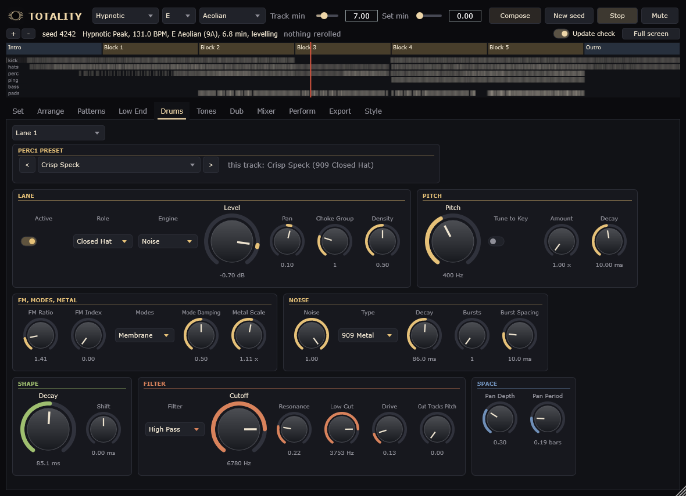
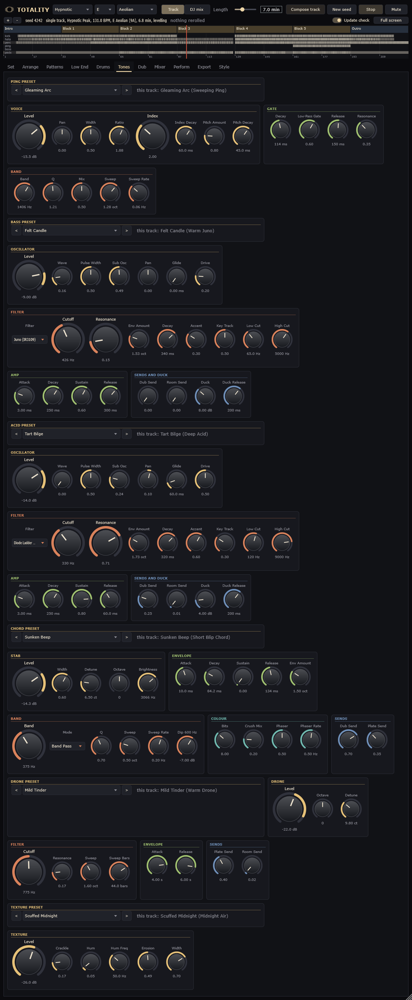
The low end is one system. The kick hands its phase on: the rumble's sub continues the kick's tail at the phase the kick left it, and the sub bass locks its phase to the last kick, so the three never cancel each other. The kick has three engines (a swept sine, a resonator, a modelled 909) and a top layer; its drive runs at four times the rate.
The rumble is the kick sent into a hall, cut below the split, clipped and ducked by the next kick -- the dark roll of Berlin techno. Either the rumble or the sub bass owns the band under 80 Hz (compose.low_owner): never both at once.
| Control | Key | Range | Default |
|---|---|---|---|
| Engine | kick.engine | Sweep, Resonator, 909 | Sweep |
| Tune | kick.tune | Free, Key, Fifth, Flat Seventh | Key |
| Pitch End | kick.pitch_end | 30 .. 120 Hz | 52 Hz |
| Pitch Start | kick.pitch_start | 60 .. 1500 Hz | 300 Hz |
| Body Decay | kick.pitch_decay | 5 .. 300 ms | 18 ms |
| Punch Decay | kick.punch_decay | 0.5 .. 20 ms | 3 ms |
| Punch | kick.punch | 0 .. 1 | 0.45 |
| Attack | kick.amp_attack | 0 .. 10 ms | 0.2 ms |
| Hold | kick.amp_hold | 0 .. 150 ms | 25 ms |
| Decay | kick.amp_decay | 20 .. 1500 ms | 380 ms |
| Drive | kick.drive | 0 .. 1 | 0.35 |
| Clip | kick.clip | Soft, Hard | Soft |
| Click | kick.click_level | 0 .. 1 | 0.35 |
| Click Tone | kick.click_tone | 500 .. 12000 Hz | 3000 Hz |
| Click Decay | kick.click_decay | 0.5 .. 30 ms | 6 ms |
| Tone | kick.tone | 200 .. 20000 Hz | 6000 Hz |
| Level | kick.level | -36 .. 6 dB | -3 dB |
| Tail Limit | kick.tail_limit | -60 .. 0 dB | 0 dB |
| Low Cut | kick.low_cut | 15 .. 60 Hz | 30 Hz |
| Dip Freq | kick.dip_freq | 200 .. 1500 Hz | 500 Hz |
| Dip | kick.dip | -12 .. 0 dB | -3 dB |
| Top Level | kick.top_level | -60 .. 0 dB | -12 dB |
| Top Pitch | kick.top_pitch | -24 .. 0 st | -8 st |
| Top Decay | kick.top_decay | 20 .. 400 ms | 90 ms |
| Top Drive | kick.top_drive | 0 .. 1 | 0.6 |
| Top Cut | kick.top_cut | 150 .. 2000 Hz | 400 Hz |
| Control | Key | Range | Default |
|---|---|---|---|
| Level | rumble.level | -60 .. 6 dB | -9 dB |
| Split | rumble.split | 50 .. 150 Hz | 80 Hz |
| Decay | rumble.decay | 0.5 .. 6 s | 1.8 s |
| Size | rumble.size | 0.3 .. 3 | 1 |
| Damping | rumble.damping | 0 .. 1 | 0.5 |
| Pre-Delay | rumble.predelay | 0 .. 60 ms | 0 ms |
| Drive | rumble.drive | 0 .. 18 dB | 6 dB |
| Low Pass | rumble.ratio | 1.5 .. 6 x f0 | 3 x f0 |
| Resonance | rumble.resonance | 0 .. 1 | 0.15 |
| Sub | rumble.sub | -60 .. 6 dB | 0 dB |
| Sub Attack | rumble.sub_attack | 5 .. 200 ms | 25 ms |
| Sub Release | rumble.sub_release | 50 .. 2000 ms | 300 ms |
| Duck | rumble.duck | 0 .. 24 dB | 7 dB |
| Duck Hold | rumble.duck_hold | 0 .. 250 ms | 80 ms |
| Duck Release | rumble.duck_release | 30 .. 600 ms | 220 ms |
| Control | Key | Range | Default |
|---|---|---|---|
| Level | sub.level | -60 .. 6 dB | -6 dB |
| Octave | sub.octave | -2 .. 2 | 0 |
| Attack | sub.attack | 0.5 .. 50 ms | 3 ms |
| Decay | sub.decay | 20 .. 2000 ms | 250 ms |
| Sustain | sub.sustain | 0 .. 1 | 0.7 |
| Release | sub.release | 10 .. 800 ms | 90 ms |
| Low Pass | sub.low_pass | 40 .. 300 Hz | 110 Hz |
| Drive | sub.drive | 0 .. 1 | 0.1 |
| Kick Lock | sub.lock | Off, Kick | Kick |
| Duck | sub.duck | 0 .. 24 dB | 9 dB |
| Duck Hold | sub.duck_hold | 0 .. 250 ms | 40 ms |
| Duck Release | sub.duck_release | 30 .. 600 ms | 180 ms |
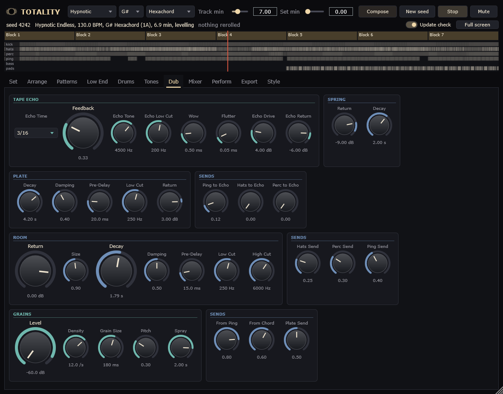
Twelve lanes, each a small drum synthesiser: a role (the closed and rolling hats, the open hat, the ride, the claps, the snare, the rim, the shaker, toms and congas, noise), an engine (noise, metal -- the 909's six square waves -- modal, tone, FM), a filter, a shape. They run side by side in the lanes of the processor's vector registers. The hats and the percussion each have a bus with its level and a low pass, then the drum bus's saturation; the ducks let the pads and the rooms step aside for the kick, band by band.
| Control | Key | Range | Default |
|---|---|---|---|
| Active | percN.active | off / on | on |
| Role | percN.role | Closed Hat, Rolling Hat, Open Hat, Ride, Clap, Clap Ghost, Snare, Rim, Shaker, Tom, Conga, Noise | Closed Hat |
| Engine | percN.engine | Noise, Metal, Modal, Tone, FM | Noise |
| Pitch | percN.pitch | 40 .. 12000 Hz | 400 Hz |
| Pitch Amount | percN.pitch_amount | 1 .. 16 x | 1 x |
| Pitch Decay | percN.pitch_decay | 0.5 .. 300 ms | 10 ms |
| FM Ratio | percN.fm_ratio | 0.25 .. 8 | 1.41 |
| FM Index | percN.fm_index | 0 .. 8 | 0 |
| Modes | percN.mode_set | Membrane, Bar, Harmonic | Membrane |
| Mode Damping | percN.mode_damp | 0 .. 1 | 0.5 |
| Metal Scale | percN.metal_scale | 0.25 .. 4 x | 1 x |
| Noise | percN.noise | 0 .. 1 | 1 |
| Noise Decay | percN.noise_decay | 2 .. 3000 ms | 70 ms |
| Bursts | percN.bursts | 1 .. 6 | 1 |
| Burst Spacing | percN.burst_spacing | 2 .. 40 ms | 10 ms |
| Decay | percN.decay | 2 .. 3000 ms | 70 ms |
| Filter | percN.filter | Low Pass, Band Pass, High Pass | High Pass |
| Cutoff | percN.cutoff | 100 .. 18000 Hz | 7000 Hz |
| Resonance | percN.resonance | 0 .. 1 | 0.15 |
| Low Cut | percN.low_cut | 150 .. 8000 Hz | 3000 Hz |
| Drive | percN.drive | 0 .. 1 | 0.1 |
| Level | percN.level | -36 .. 6 dB | -0.7 dB |
| Pan | percN.pan | -1 .. 1 | 0.1 |
| Choke Group | percN.choke | 0 .. 4 | 1 |
| Shift | percN.shift | -10 .. 10 ms | 0 ms |
| Density | percN.density | 0 .. 1 | 0.5 |
| Tune to Key | percN.tune | off / on | off |
| Pan Depth | percN.pan_depth | 0 .. 1 | 0.3 |
| Pan Period | percN.pan_bars | 0.0625 .. 16 bars | 0.1875 bars |
| Cut Tracks Pitch | percN.cut_track | 0 .. 2 | 0 |
| Noise Type | percN.noise_type | White, 909 Metal | 909 Metal |
| Control | Key | Range | Default |
|---|---|---|---|
| Hats Level | mix.hats_level | -24 .. 12 dB | -3.5 dB |
| Hats Cut | mix.hats_cut | 200 .. 20000 Hz | 20000 Hz |
| Perc Level | mix.perc_level | -24 .. 12 dB | -6.5 dB |
| Perc Cut | mix.perc_cut | 200 .. 20000 Hz | 20000 Hz |
| Drum Saturation | mix.drum_sat | 0 .. 1 | 0.35 |
| Duck Low | mix.duck_low | 0 .. 18 dB | 10 dB |
| Duck Mid | mix.duck_mid | 0 .. 12 dB | 3 dB |
| Group Low Cut | mix.low_cut | 20 .. 500 Hz | 20 Hz |
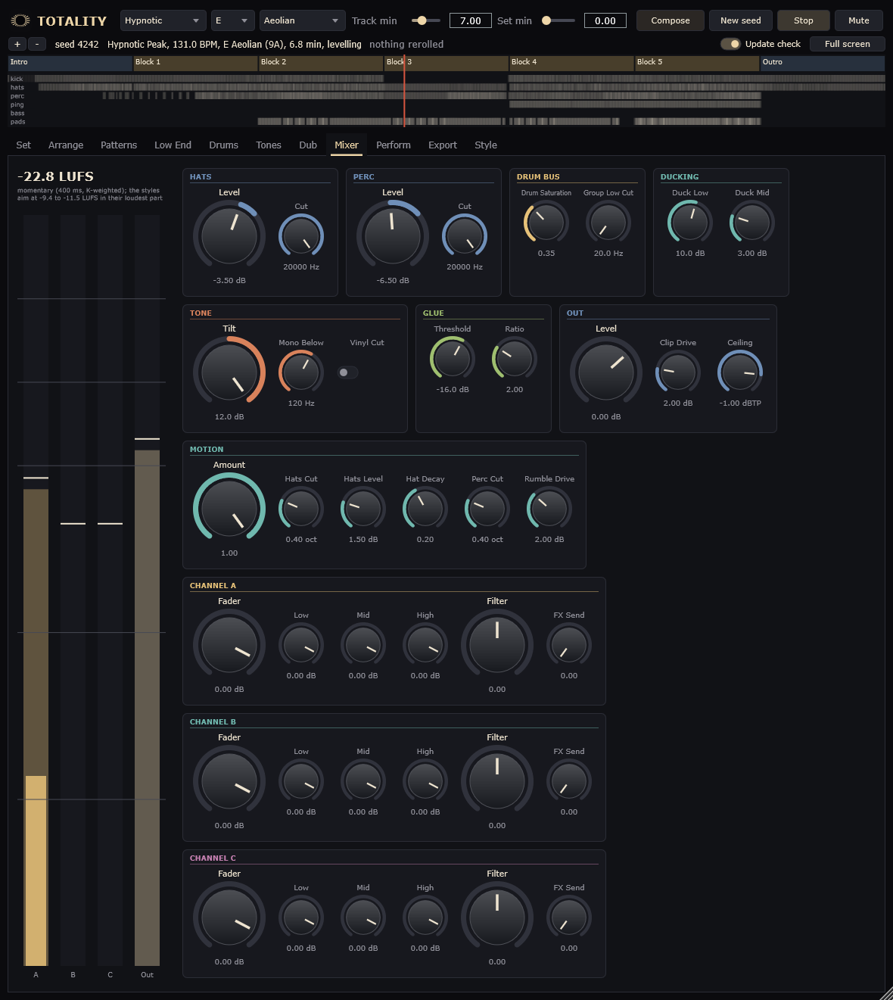
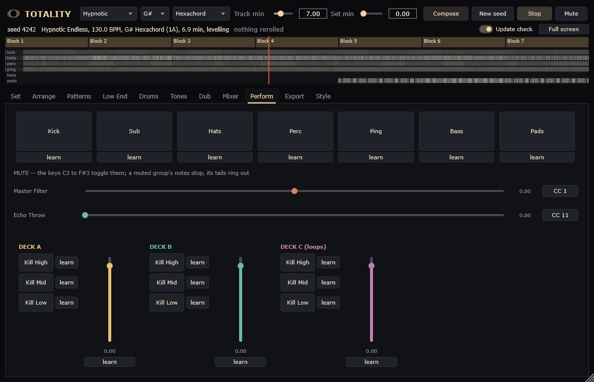
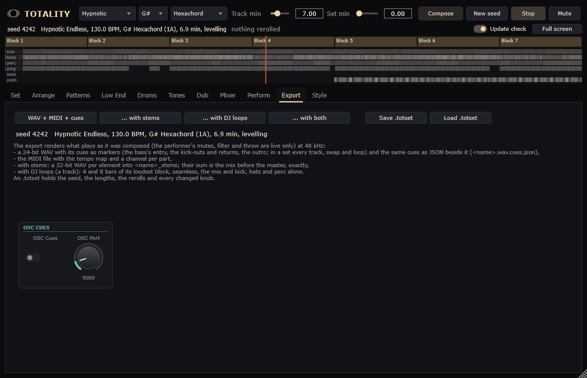
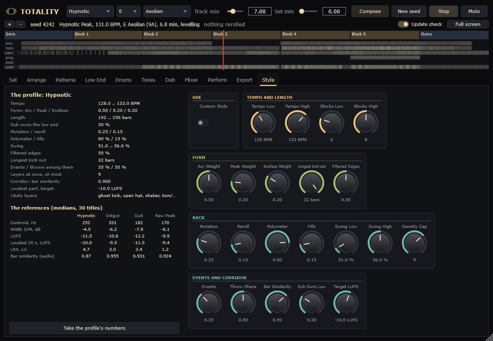
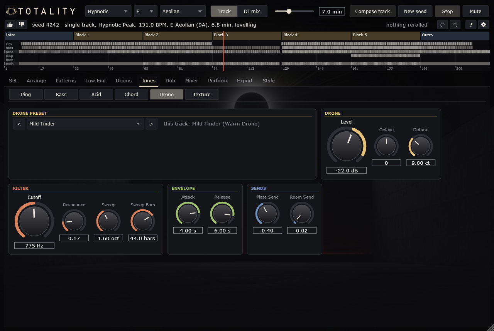
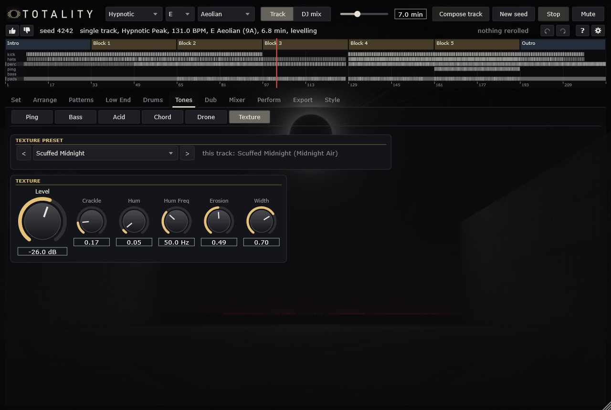
The ping is the hypnotic school's figure: FM through a low-pass gate, a band pass that wanders. The bass and the 303 share one synthesiser with ten circuit filters (the Moog ladder, the 303's diode ladder, the Prophet's SSM2040, the Juno's IR3109, the SEM, the MS-20's Korg35 and more); the 303 line has its accents and slides. The dub chord is a minor seventh or a stab of six voices through a band pass, a crusher and a phaser, sent into the tape echo and the plate. The drone holds a note under eight bars; the texture is vinyl crackle, hum and erosion.
| Control | Key | Range | Default |
|---|---|---|---|
| Level | ping.level | -60 .. 6 dB | -12.5 dB |
| Pan | ping.pan | -1 .. 1 | 0 |
| Width | ping.width | 0 .. 1 | 0.5 |
| Ratio | ping.ratio | 0.25 .. 8 | 1.414 |
| Index | ping.index | 0 .. 6 | 2 |
| Index Decay | ping.index_decay | 2 .. 500 ms | 60 ms |
| Pitch Amount | ping.pitch_amount | 0 .. 4 | 0.8 |
| Pitch Decay | ping.pitch_decay | 2 .. 300 ms | 45 ms |
| Decay | ping.decay | 10 .. 2000 ms | 140 ms |
| Low-Pass Gate | ping.lpg | 0 .. 1 | 0.6 |
| Gate Release | ping.lpg_release | 10 .. 2000 ms | 150 ms |
| Resonance | ping.resonance | 0 .. 1 | 0.35 |
| Band | ping.band | 150 .. 6000 Hz | 900 Hz |
| Band Q | ping.band_q | 0.2 .. 8 | 0.8 |
| Band Mix | ping.band_mix | 0 .. 1 | 0.5 |
| Sweep | ping.sweep | 0 .. 2 oct | 0.6 oct |
| Sweep Rate | ping.sweep_rate | 0.01 .. 2 Hz | 0.07 Hz |
| Control | Key | Range | Default |
|---|---|---|---|
| Level | bass.level | -60 .. 6 dB | -9 dB |
| Pan | bass.pan | -1 .. 1 | 0 |
| Wave | bass.wave | 0 .. 1 | 0 |
| Pulse Width | bass.pulse_width | 0.05 .. 0.95 | 0.5 |
| Sub Osc | bass.sub_osc | 0 .. 1 | 0.3 |
| Filter | bass.filter | Moog Ladder, Prophet (SSM2040), Juno (IR3109), Oberheim SEM, Xpander, Diode Ladder (303), Korg35 (MS-20), Polivoks, EDP Wasp, Comb | Juno (IR3109) |
| Cutoff | bass.cutoff | 40 .. 12000 Hz | 350 Hz |
| Resonance | bass.resonance | 0 .. 1 | 0.2 |
| Env Amount | bass.env_amount | 0 .. 6 oct | 2 oct |
| Decay | bass.decay | 5 .. 3000 ms | 180 ms |
| Accent | bass.accent | 0 .. 1 | 0.3 |
| Attack | bass.amp_attack | 0.5 .. 500 ms | 3 ms |
| Amp Decay | bass.amp_decay | 5 .. 3000 ms | 250 ms |
| Sustain | bass.amp_sustain | 0 .. 1 | 0.6 |
| Release | bass.amp_release | 5 .. 3000 ms | 300 ms |
| Glide | bass.glide | 0 .. 500 ms | 0 ms |
| Drive | bass.drive | 0 .. 1 | 0.2 |
| Key Track | bass.key_track | 0 .. 1 | 0.5 |
| Low Cut | bass.low_cut | 20 .. 500 Hz | 65 Hz |
| High Cut | bass.high_cut | 500 .. 20000 Hz | 5000 Hz |
| Dub Send | bass.dub_send | 0 .. 1 | 0 |
| Room Send | bass.room_send | 0 .. 1 | 0 |
| Duck | bass.duck | 0 .. 24 dB | 8 dB |
| Duck Release | bass.duck_release | 30 .. 600 ms | 200 ms |
| Control | Key | Range | Default |
|---|---|---|---|
| Level | acid.level | -60 .. 6 dB | -14 dB |
| Pan | acid.pan | -1 .. 1 | 0.1 |
| Wave | acid.wave | 0 .. 1 | 0 |
| Pulse Width | acid.pulse_width | 0.05 .. 0.95 | 0.5 |
| Sub Osc | acid.sub_osc | 0 .. 1 | 0 |
| Filter | acid.filter | Moog Ladder, Prophet (SSM2040), Juno (IR3109), Oberheim SEM, Xpander, Diode Ladder (303), Korg35 (MS-20), Polivoks, EDP Wasp, Comb | Diode Ladder (303) |
| Cutoff | acid.cutoff | 40 .. 12000 Hz | 600 Hz |
| Resonance | acid.resonance | 0 .. 1 | 0.72 |
| Env Amount | acid.env_amount | 0 .. 6 oct | 2.5 oct |
| Decay | acid.decay | 5 .. 3000 ms | 220 ms |
| Accent | acid.accent | 0 .. 1 | 0.6 |
| Attack | acid.amp_attack | 0.5 .. 500 ms | 3 ms |
| Amp Decay | acid.amp_decay | 5 .. 3000 ms | 250 ms |
| Sustain | acid.amp_sustain | 0 .. 1 | 0.8 |
| Release | acid.amp_release | 5 .. 3000 ms | 60 ms |
| Glide | acid.glide | 0 .. 500 ms | 60 ms |
| Drive | acid.drive | 0 .. 1 | 0.5 |
| Key Track | acid.key_track | 0 .. 1 | 0.3 |
| Low Cut | acid.low_cut | 20 .. 500 Hz | 120 Hz |
| High Cut | acid.high_cut | 500 .. 20000 Hz | 9000 Hz |
| Dub Send | acid.dub_send | 0 .. 1 | 0.25 |
| Room Send | acid.room_send | 0 .. 1 | 0.01 |
| Duck | acid.duck | 0 .. 24 dB | 4 dB |
| Duck Release | acid.duck_release | 30 .. 600 ms | 200 ms |
| Control | Key | Range | Default |
|---|---|---|---|
| Level | chord.level | -60 .. 6 dB | -5 dB |
| Width | chord.width | 0 .. 1 | 0.6 |
| Detune | chord.detune | 0 .. 30 ct | 10 ct |
| Octave | chord.octave | -2 .. 2 | 0 |
| Attack | chord.attack | 0.5 .. 500 ms | 10 ms |
| Decay | chord.decay | 20 .. 3000 ms | 300 ms |
| Sustain | chord.sustain | 0 .. 1 | 0.15 |
| Release | chord.release | 10 .. 3000 ms | 400 ms |
| Brightness | chord.bright | 200 .. 12000 Hz | 2500 Hz |
| Env Amount | chord.env_amount | 0 .. 5 oct | 1.5 oct |
| Band | chord.band | 100 .. 3000 Hz | 380 Hz |
| Band Mode | chord.band_mode | Band Pass, High Pass | Band Pass |
| Band Q | chord.band_q | 0.2 .. 4 | 0.7 |
| Sweep | chord.sweep | 0 .. 2 oct | 0.5 oct |
| Sweep Rate | chord.sweep_rate | 0.01 .. 2 Hz | 0.2 Hz |
| Bits | chord.crush | 4 .. 16 | 8 |
| Crush Mix | chord.crush_mix | 0 .. 1 | 0.2 |
| Phaser | chord.phaser | 0 .. 1 | 0.5 |
| Phaser Rate | chord.phaser_rate | 0.05 .. 4 Hz | 0.5 Hz |
| Dip 600 Hz | chord.dip | -18 .. 0 dB | -7 dB |
| Dub Send | chord.dub_send | 0 .. 1 | 0.5 |
| Plate Send | chord.plate_send | 0 .. 1 | 0.35 |
| Control | Key | Range | Default |
|---|---|---|---|
| Level | drone.level | -60 .. 6 dB | -13 dB |
| Octave | drone.octave | -2 .. 2 | 0 |
| Detune | drone.detune | 0 .. 30 ct | 8 ct |
| Cutoff | drone.cutoff | 80 .. 8000 Hz | 700 Hz |
| Resonance | drone.resonance | 0 .. 1 | 0.25 |
| Sweep | drone.sweep | 0 .. 4 oct | 1.5 oct |
| Sweep Bars | drone.sweep_bars | 4 .. 128 bars | 32 bars |
| Attack | drone.attack | 0.01 .. 20 s | 4 s |
| Release | drone.release | 0.01 .. 20 s | 6 s |
| Plate Send | drone.plate_send | 0 .. 1 | 0.4 |
| Room Send | drone.room_send | 0 .. 1 | 0.02 |
| Control | Key | Range | Default |
|---|---|---|---|
| Level | texture.level | -60 .. 0 dB | -26 dB |
| Crackle | texture.crackle | 0 .. 1 | 0.5 |
| Hum | texture.hum | 0 .. 1 | 0.2 |
| Hum Freq | texture.hum_hz | 40 .. 70 Hz | 50 Hz |
| Erosion | texture.erosion | 0 .. 1 | 0.4 |
| Width | texture.width | 0 .. 1 | 0.8 |
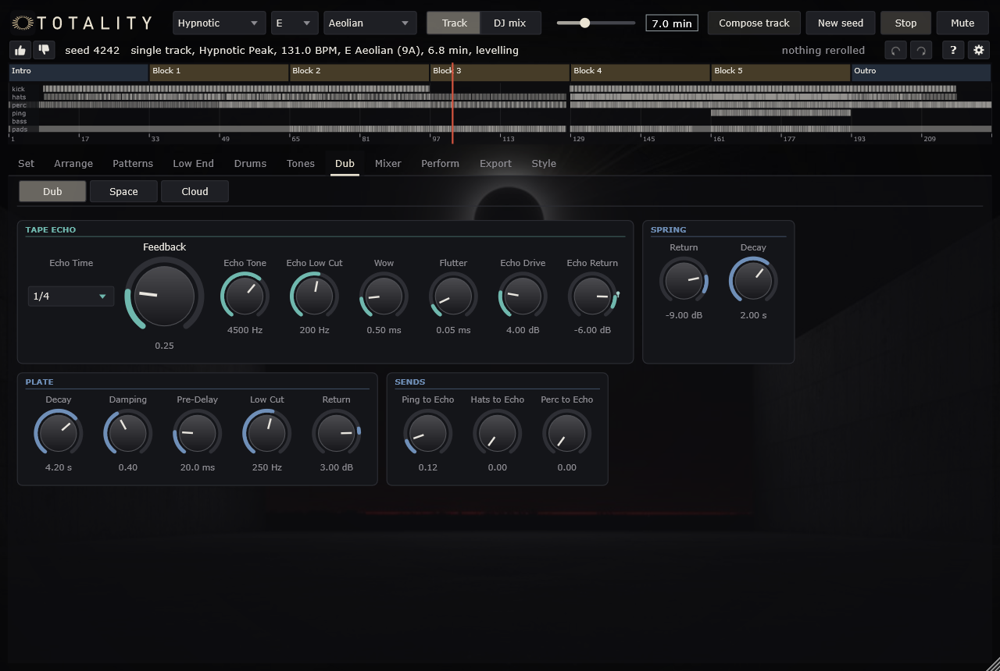
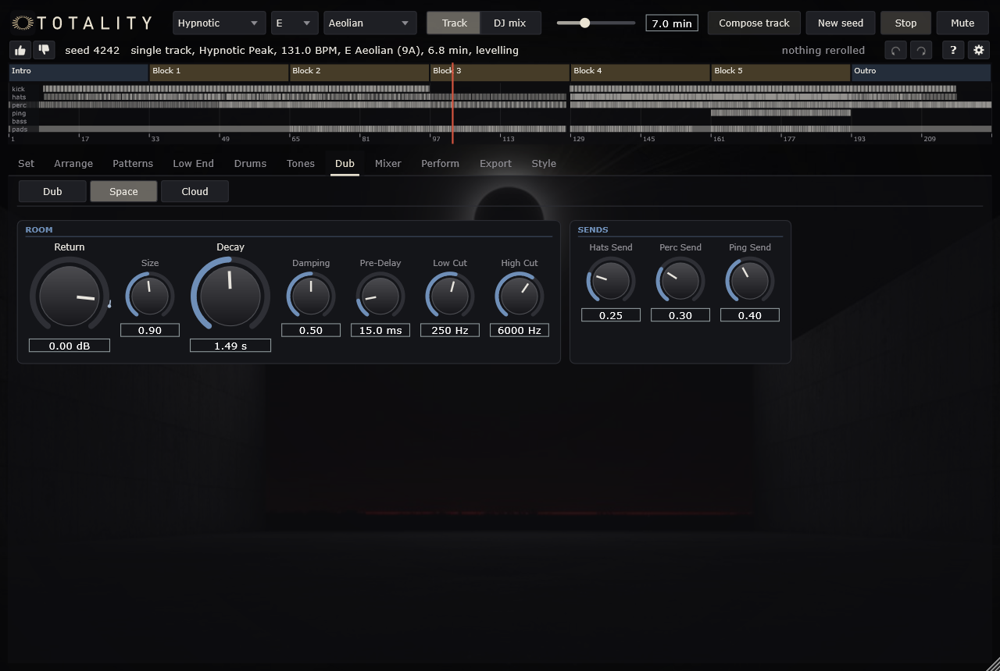
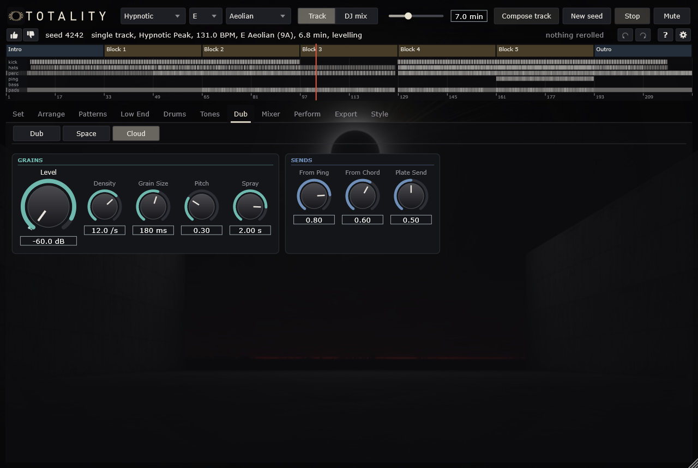
The dub chain: a tape echo with wow, flutter and drive, a spring, a plate. The ping, the chord and the kit's buses send into it, and the composer throws single hits into the echo on the 8-bar lines. The room is the hall the hats, the percussion and the ping live in; the grain cloud hears the ping and the chord and scatters them.
| Control | Key | Range | Default |
|---|---|---|---|
| Echo Time | dub.echo_time | 1/16, 1/8, 3/16, 1/4, 3/8, 1/2 | 3/16 |
| Feedback | dub.feedback | 0 .. 1.2 | 0.25 |
| Echo Tone | dub.tone | 800 .. 12000 Hz | 4500 Hz |
| Echo Low Cut | dub.low_cut | 40 .. 800 Hz | 200 Hz |
| Wow | dub.wow | 0 .. 3 ms | 0.5 ms |
| Flutter | dub.flutter | 0 .. 0.5 ms | 0.05 ms |
| Echo Drive | dub.drive | 0 .. 18 dB | 4 dB |
| Echo Return | dub.echo_return | -60 .. 6 dB | -3 dB |
| Spring Return | dub.spring | -60 .. 6 dB | -9 dB |
| Spring Decay | dub.spring_decay | 0.3 .. 6 s | 2 s |
| Plate Decay | dub.plate_decay | 0.5 .. 12 s | 4.2 s |
| Plate Damping | dub.plate_damping | 0 .. 1 | 0.4 |
| Plate Pre-Delay | dub.plate_predelay | 0 .. 100 ms | 20 ms |
| Plate Low Cut | dub.plate_low_cut | 60 .. 800 Hz | 250 Hz |
| Plate Return | dub.plate_return | -60 .. 18 dB | 6 dB |
| Ping to Echo | dub.ping_send | 0 .. 1 | 0.12 |
| Hats to Echo | dub.hats_send | 0 .. 1 | 0 |
| Perc to Echo | dub.perc_send | 0 .. 1 | 0 |
| Control | Key | Range | Default |
|---|---|---|---|
| Return | space.level | -60 .. 12 dB | 0 dB |
| Size | space.size | 0.3 .. 3 | 0.9 |
| Decay | space.decay | 0.2 .. 12 s | 1.2 s |
| Damping | space.damping | 0 .. 1 | 0.5 |
| Pre-Delay | space.predelay | 0 .. 100 ms | 15 ms |
| Low Cut | space.low_cut | 60 .. 800 Hz | 250 Hz |
| High Cut | space.high_cut | 1000 .. 18000 Hz | 6000 Hz |
| Hats Send | space.hats_send | 0 .. 1 | 0.25 |
| Perc Send | space.perc_send | 0 .. 1 | 0.3 |
| Ping Send | space.ping_send | 0 .. 1 | 0.4 |
| Control | Key | Range | Default |
|---|---|---|---|
| Level | cloud.level | -60 .. 6 dB | -60 dB |
| Density | cloud.density | 0.5 .. 60 /s | 12 /s |
| Grain Size | cloud.size | 20 .. 1000 ms | 180 ms |
| Pitch | cloud.pitch | 0 .. 1 | 0.3 |
| Spray | cloud.spray | 0.05 .. 4.5 s | 2 s |
| From Ping | cloud.ping_send | 0 .. 1 | 0.8 |
| From Chord | cloud.chord_send | 0 .. 1 | 0.6 |
| Plate Send | cloud.plate_send | 0 .. 1 | 0.5 |
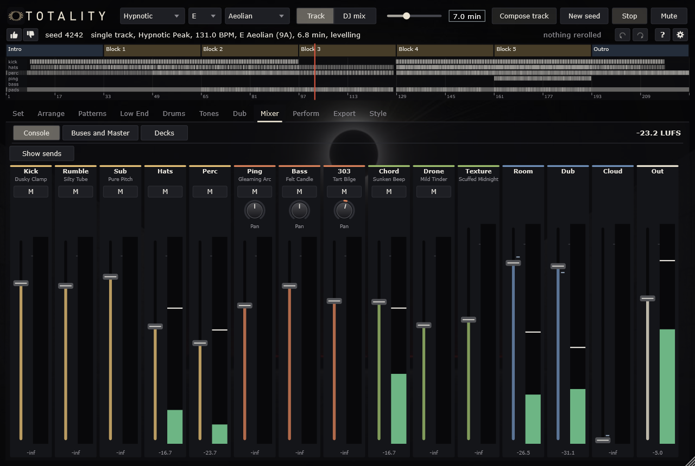
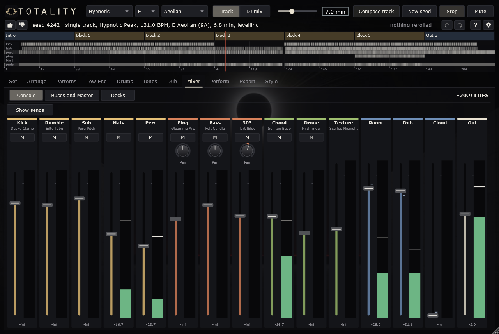
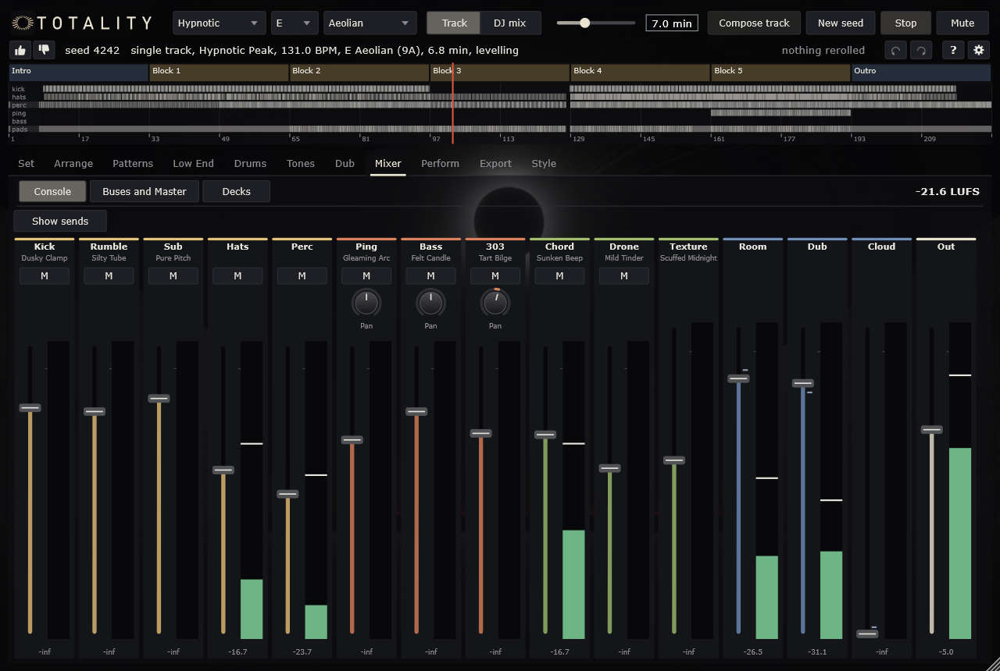
The Mixer tab has three pages. Console: a channel strip per part -- kick, rumble, sub, the kit's lanes, the tonal voices, the dub -- with its level, its mute, its sound and its meter, and the output with its loudness at the end (a narrow window scrolls the console sideways). Buses and Master: the parameters below. Decks: the DJ mixer's channels.
The meters: each deck after its mixer channel, the output, and the loudness of the last 400 ms. Each deck's track bus has a group high pass (the form's filter sweeps), a tilt of the highs against the lows, and the glue -- a bus compressor mixed in at 35 per cent -- after which the loudness correction sits. The master keeps the side under Mono Below mono, sets the level, has an optional vinyl cut, a clipper at four times the rate and a true-peak limiter.
The motion is the free-running modulation of the whole instrument: the hats' cutoff and level, their decay, the percussion's cutoff, the rumble's drive, slow LFOs of prime periods that never line up.
A deck's channel is a DJ mixer's: the fader, a three-band isolator (200 Hz and 2.5 kHz, Linkwitz-Riley, each band from a kill to +6 dB), a filter that is a low pass to the left and a high pass to the right, and the send into the mixer's effects. In a set the composer moves them as a DJ would; in the plugin they are yours too.
| Control | Key | Range | Default |
|---|---|---|---|
| Hats Level | mix.hats_level | -24 .. 12 dB | -3.5 dB |
| Hats Cut | mix.hats_cut | 200 .. 20000 Hz | 20000 Hz |
| Perc Level | mix.perc_level | -24 .. 12 dB | -6.5 dB |
| Perc Cut | mix.perc_cut | 200 .. 20000 Hz | 20000 Hz |
| Drum Saturation | mix.drum_sat | 0 .. 1 | 0.35 |
| Duck Low | mix.duck_low | 0 .. 18 dB | 10 dB |
| Duck Mid | mix.duck_mid | 0 .. 12 dB | 3 dB |
| Group Low Cut | mix.low_cut | 20 .. 500 Hz | 20 Hz |
| Control | Key | Range | Default |
|---|---|---|---|
| Level | master.level | -24 .. 12 dB | 0 dB |
| Glue Threshold | master.threshold | -40 .. 0 dB | -16 dB |
| Glue Ratio | master.ratio | 1 .. 10 | 2 |
| Clip Drive | master.clip | 0 .. 9 dB | 2 dB |
| Ceiling | master.ceiling | -6 .. 0 dBTP | -1 dBTP |
| Mono Below | master.mono_below | 40 .. 250 Hz | 120 Hz |
| Tilt | master.tilt | -12 .. 12 dB | 10 dB |
| Vinyl Cut | master.cut | off / on | off |
| Control | Key | Range | Default |
|---|---|---|---|
| Amount | motion.amount | 0 .. 1 | 1 |
| Hats Cut | motion.hats_cut | 0 .. 1.5 oct | 0.4 oct |
| Hats Level | motion.hats_level | 0 .. 6 dB | 1.5 dB |
| Hat Decay | motion.hat_decay | 0 .. 0.5 | 0.2 |
| Perc Cut | motion.perc_cut | 0 .. 1.5 oct | 0.4 oct |
| Rumble Drive | motion.rumble_drive | 0 .. 6 dB | 2 dB |
| Control | Key | Range | Default |
|---|---|---|---|
| Fader | deckN.fader | -60 .. 6 dB | 0 dB |
| Low | deckN.low | -60 .. 6 dB | 0 dB |
| Mid | deckN.mid | -60 .. 6 dB | 0 dB |
| High | deckN.high | -60 .. 6 dB | 0 dB |
| Filter | deckN.filter | -1 .. 1 | 0 |
| FX Send | deckN.fx_send | 0 .. 1 | 0 |
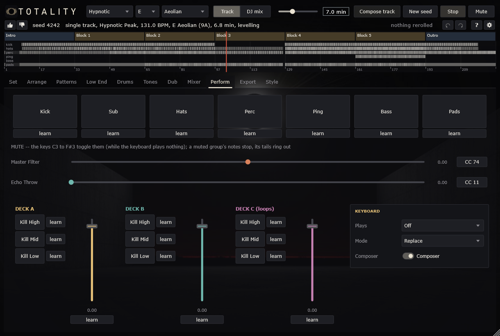
As at a mixer. Seven mutes: a muted group's notes stop and its tails ring out -- the kick out, the classic move. The master filter takes the whole mix, the echo throw sends it into the mixer's tape echo. Each deck has its kills and its fader. Every control can be learned from a MIDI controller: click learn, move the controller (a right click forgets it). By default controller 74 (brightness) moves the filter and the expression pedal (11) the throw -- the same in every generator of the family --, and the keys from middle C up (C to F#) toggle the mutes of kick, sub, hats, perc, ping, bass and pads. The bindings are saved with the project. While a headset sends its hands, a box beside the mutes shows what they do (The panel).
The keyboard (the Keyboard group): Keyboard Plays sends the keys of a MIDI keyboard to a voice instead of the mutes -- the kit (C1 the kick, C#1 to C2 the twelve lanes), the bass, the 303, the ping, the chord, the drone, or by channel (1 kit, 2 bass, 3 303, 4 ping, 5 chord, 6 drone, 10 kit) -- with the sound its page has, past the mutes. Replace leaves that voice's generated notes out, Layer plays over them; Composer off leaves every generated note out, and only what is played sounds, through the mix and the effects as composed. The keys play while the music runs, each on its sample; an export plays what was composed.
The perform controls are live only: an export or tot_render plays the track as it was composed.
| Control | Key | Range | Default |
|---|---|---|---|
| Master Filter | perform.filter | -1 .. 1 | 0 |
| Echo Throw | perform.throw | 0 .. 1 | 0 |
| Mute Kick | perform.mute_kick | off / on | off |
| Mute Sub | perform.mute_sub | off / on | off |
| Mute Hats | perform.mute_hats | off / on | off |
| Mute Perc | perform.mute_perc | off / on | off |
| Mute Ping | perform.mute_ping | off / on | off |
| Mute Bass | perform.mute_bass | off / on | off |
| Mute Pads | perform.mute_pads | off / on | off |
| Keyboard Plays | perform.keyboard_part | Off, Kit, Bass, 303, Ping, Chord, Drone, By channel | Off |
| Keyboard Mode | perform.keyboard_mode | Replace, Layer | Replace |
| Composer | perform.composer | off / on | on |
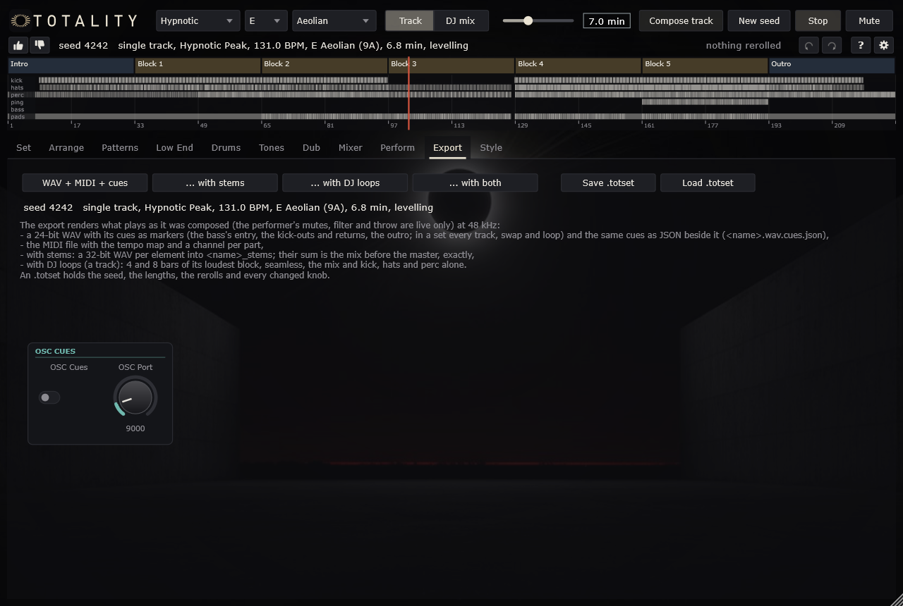
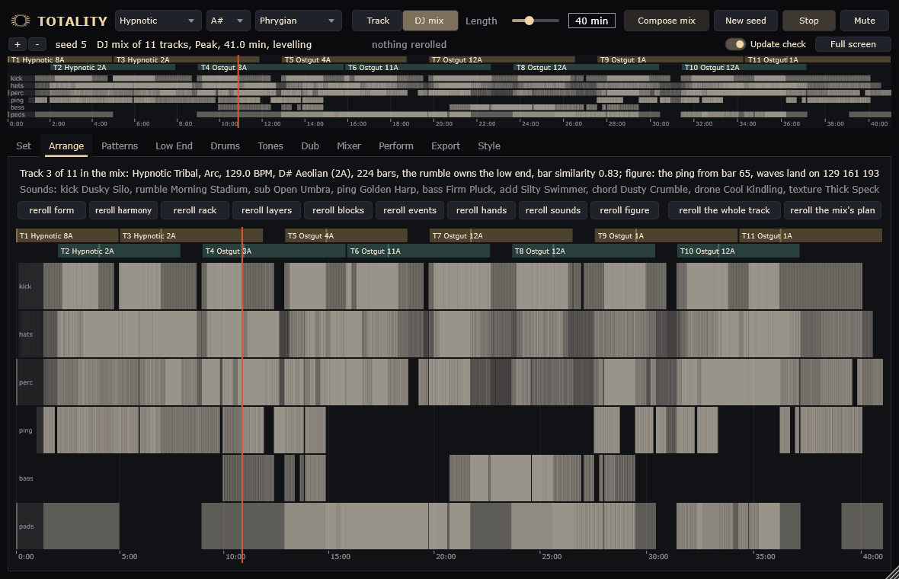
The export renders what plays at 48 kHz: a 24-bit WAV with cue markers (the bass's entry, the kick-outs and returns, the outro; in a set every track, swap and loop) and the same cues as JSON beside it, for DJ software that does not read the WAV's markers, and a rekordbox collection beside it (<name>.wav.rekordbox.xml: the beat grid, following a set's tempo ramps bar by bar, every cue a memory cue and the first eight hot cues; import it in rekordbox under Preferences > Advanced > rekordbox xml); the MIDI file with the tempo map and a channel per part; on request the stems -- a WAV per element, whose sum is exactly the mix before the master -- and the DJ loops of a track: 4 and 8 bars of its loudest block, seamless, as the mix and as kick, hats and percussion alone. An .totset file holds the seed, the lengths, the rerolls and every changed knob.
The OSC cues tell a visualiser such as Kaleidoscope what the score knows, at the moment it is heard: the beat and the tempo, the bar, the block's name, the form's operation, the key. They go to this machine at the port given, or to TOT_CUE_HOST.
/tot/beat i f beat number, tempo
/tot/bar i bar number
/tot/block s the block's name ("Intro", "Block 3", "Reduction", a set's track)
/tot/op s the operation ("add ride", "kick out")
/tot/key s the key as a Camelot label ("8A")
| Control | Key | Range | Default |
|---|---|---|---|
| OSC Cues | cue.enabled | off / on | off |
| OSC Port | cue.port | 1024 .. 65535 | 9000 |
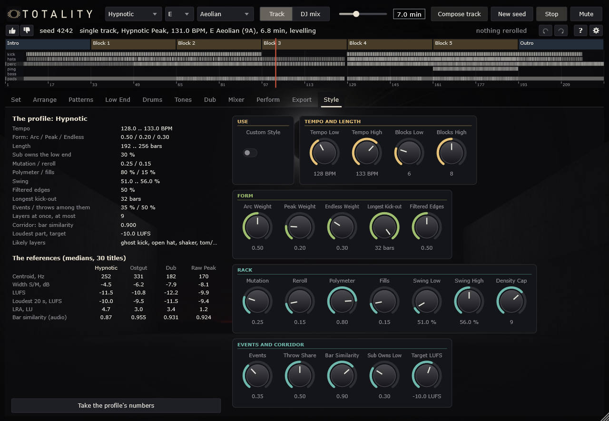
The numbers of the profile the knobs describe, and the references' measurements per style that the profiles are fitted to. A style of your own: Take the profile's numbers, change what you like, switch Use on -- the tempo range, the weights of the three forms, the length, the rack's mutation and reroll, polymeters, fills, swing, the filtered edges, the longest kick-out, the events, the corridor of bar similarity the composer's candidates are chosen against, and the loudness the Leveler brings each track to.
| Control | Key | Range | Default |
|---|---|---|---|
| Use Custom Style | custom.use | off / on | off |
| Tempo Low | custom.bpm_low | 120 .. 140 BPM | 128 BPM |
| Tempo High | custom.bpm_high | 120 .. 140 BPM | 133 BPM |
| Arc Weight | custom.arc | 0 .. 1 | 0.5 |
| Peak Weight | custom.peak | 0 .. 1 | 0.2 |
| Endless Weight | custom.endless | 0 .. 1 | 0.3 |
| Sub Owns Low | custom.sub_chance | 0 .. 1 | 0.3 |
| Blocks Low | custom.blocks_low | 4 .. 12 | 6 |
| Blocks High | custom.blocks_high | 4 .. 12 | 8 |
| Mutation | custom.mutation | 0 .. 1 | 0.25 |
| Reroll | custom.reroll | 0 .. 1 | 0.15 |
| Polymeter | custom.polymeter | 0 .. 1 | 0.8 |
| Fills | custom.fill | 0 .. 1 | 0.15 |
| Filtered Edges | custom.edge | 0 .. 1 | 0.5 |
| Longest Kick-out | custom.max_reduction | 4 .. 32 bars | 32 bars |
| Swing Low | custom.swing_low | 50 .. 62 % | 51 % |
| Swing High | custom.swing_high | 50 .. 62 % | 56 % |
| Events | custom.event_rate | 0 .. 1 | 0.35 |
| Throw Share | custom.throw_share | 0 .. 1 | 0.5 |
| Density Cap | custom.density_cap | 3 .. 12 | 9 |
| Bar Similarity | custom.similarity | 0.7 .. 1 | 0.9 |
| Target LUFS | custom.peak_lufs | -14 .. -7 LUFS | -10 LUFS |
The whole generator runs on the headset (bin\quest\TotalityQuest.apk, see Quest/README.md). The hands are the hands at the mixer: left pinch play and stop, right pinch kick out and in, both hands together the next track; the left hand's height the master filter, the right's the echo throw -- the grammar of every generator's headset (The panel). Above and ahead of the player the Eclipse turns at the size of a room. A file tot.cfg in the app's folder sets the seed, the style, a set's length and any knob; bridge_host (and bridge_port, 9103) send the hands to Totality on a computer instead, which then plays with them as with its own; audio=0 leaves the headset silent.
tot_render composes and renders without a window, the same samples the plugin plays:
tot_render --seed 7 --out track.wav --midi track.mid --stems stems --loops loops tot_render --seed 2026 --set-minutes 120 --out set.wav --score-json set.json tot_render --set "compose.style=Dub; compose.minutes=8" --seed 3 --out dub.wav tot_render --list every parameter with its value tot_render --bench --quality quest how fast, at the headset's quality
The evaluation (Tools/eval_report.py) measures rendered tracks as the references were measured and writes a report of what lies outside their corridor.